Creating A Market
February/March 1999
Get started in community supported agriculture.
by Sarah Milstein
In 1992, Debby and Pete Kavakos began growing produce on an acre of their homestead property, Stoneledge Farm, in upstate New York. They sold their vegetables at a local farmers' market and to restaurants. Although they knew they wanted to expand their business, they realized after a few seasons that local markets would not be big enough to support their growth.
They thought of selling at farmers' markets in New York City, about three hours away. "My family has been farming for generations, and my great-grandfather sold his goods in New York City," says Debby, "so that's a natural connection for us." But with a distant farmers' market, Debby would have to spend a couple of full days in the city each week--leaving in the morning before her four children woke up and returning at night after they were asleep.
In 1996, the Kavakos learned about community supported agriculture (CSA, through an organic agriculture newsletter. In CSA, members buy shares of farm's harvest before the season begins; Then, usually June through late fall. CSA members receive a share of the farm's bounty. CSA growers may make weekly deliveries to distribution points. or members may pick up at the farm. Typically, seven to ten types of fresh. usually organic vegetables are delivered or picked up each week.
The Kavakos thought that a city-based CSA group might meet their needs "A big part 6i the reason we enjoy farming is the family aspect of it, and the CSA group allows us to tap the city market, but with a much shorter trip. It takes between six and eight hours total to drive down, unload the truck, visit with members and maybe do a little city shopping, then drive back," Debby explains. "It works into our family and our marketing goals."
To start their group, Debby contacted just Food, a New York City nonprofit organization that works on food-related issues. Just Food helped her find a few interested city people who could work with her to bulld a membership and to find a distribution site. The Kavakos now grow 140 shares on 15 acres. and would like to expand to 300 shares over the next three or four years. Two CSA groups comprise more than 90% of the couple's business, with their remaining shares going to a few local people. With the promise of growth, Stoneledge has been able to invest in a 40' x 60' pole barn and some new equipment, including a tractor and delivery truck. Debby now farms full time, with help from the Kavakos kids; they hope that next year, Pete will be able to quit his off-farm job and work with the family full time, as well.
The CSA group is not a perfect solution for the Kavakos. "We might be able to make more per acre if we sold at a farmers' market," Debby says. "And there's lots of stress because people have already paid and have expectations of our deliveries. Plus, managing the CSA group is not always easy. It took a while to build trust and respect between the growers and the members. At first, we were worried: Are the members going to tell us how to run our farm? We're still working out some of those communications and a sense of which jobs the members do and which things we do. It's a continual learning process."
Debby and Peter Kavakos tending their Stoneledge Farm in upstate New York. Right is Debby, proudly mugging in front of their new truck. Business must be good!
The idea of CSA developed about 30 years ago in Japan, where it is called teikei, which translates as "food with the farmer's face on it." Teikei moved first to Europe and then, in 1985, it was introduced to the U.S., where the term community supported agriculture was coined.
Today, Stoneledge Farm is one of about 600 CSA groups in North America that together provide produce to nearly 100,000 people.
The CSA MODEL
For growers, the many benefits of CSA include receiving cash up front during the winter months, when it is most needed but least forthcoming. And, with the season long support of a community, you are guaranteed a market for your produce and are thus relieved of some of the risk of small-scale farming.
The community supported agriculture model is very flexible, and every CSA group is unique. In some groups, members pay ahead of time for a full season, with the understanding that they will accept some of the risks of production (if you have a tomato failure, they'll buy their tomatoes elsewhere) and may enjoy some of the bounty (if you have a terrific basil crop they'll freeze pesto by the quirt). In other groups, members subscribe on a monthly basis and receive a predetermined amount of produce each week. Most CSA groups offer vegetables as their basic share. But some groups also offer fruit, herbs, flowers, bread, cheese, eggs, yogurt, beef, honey, maple syrup, and most anything else you can produce on a farm.
WHAT YOU NEED TO START A CSA GROUP
Growing Experience
First of all, you must be an accomplished grower. CSA is not for beginners! It requires experience growing 40 or more crops in a succession that will yield seven or more different items on the same day each week over the course of a 20- to 52-week season. While farming any piece of land is a long term learning process and members who support a farmer assume some risk, you cannot expect them to finance your complete on-the-job training.
"It's harder to be a CSA grower than a regular market gardener," observes Debby Kavakos, "because you have to have many goodies each week.with a farmers' market, you leave your failures at home and bring what you have. But with the CSA shares, you can't just have a bagful of cabbage and that's it. People expect a variety of good things".
One of the most frequently cited factors in failed CSA groups is that the grower did not know how to grow a diverse, bountiful harvest. Several seasons of selling directly to people at farmers' markets or through a farm stand can help you learn what items customers like and how to produce them.
Members
Members are what constitutes a CSA group, but how many members do you neeicirSW:K Hollow Farm in Argyle, New York has about a dozen local members in its CSA group, who pick up their shares in the barn's washing area. The CSA members cover a small percentage of the farm's operating budget, with most of Slack Hollow's seven acres of vegetables sold through a food co-op in the region. Across the Hudson River, Roxbury Farm in Claverack grows 25 acres of vegetables for nearly 700 members. The Roxbury members account for 90% o7 the farm's operating budget and live in three different areas in two cities and in the farm's own county.
Slack Hollow and Roxbury exemplify the range of sizes for CSA groups and the variety of roles CSA can play in a farm or a market garden. A 1996 survey of CSA farms in the Northeast found that the average membership was 65 households: three quarters of the 100 growers responding to the survey used other market outlets( such as farmer's markets and wholesaling) in addition to the CSA group.
The number of members you'll need will depend on many factors, including your acreage, your expected output, and you budget if you are planning on delivering off-site, you will probably need a minimum of 50 members to make your run worthwhile.
Marketing Strategy
Once you've decided how many members you're aiming for, how do you find folks to sign on? A primary tool for advertising your CSA group will be brochures. So create--or have a member create--a trifold brochure that explains CSA, gives some details about your farm, and has a tear-off enrollment form. All printed materials about your CSA group should include full contact information and a mention of your growing methods if you follow organic guidelines.
A simple one-page flyer appropriate for posting on community bulletin boards will also be useful; hang them liberally. You may also run a small, simple newspaper ad. Many local papers will print it free of charge if they have extra space.
Unlike advertising, publicity is media coverage that you don't pay for. Let local media outlets such as newspapers, radio, cable television, and Web sites know that you're starting an exciting venture. Send them--or have a member write and send out--a press release announcing the availability of shares and include with it your brochure, farm newsletter (1f you have one); and clips from other coverage you have received (if any). Many farms find it fruitful to start out by holding one or two informational meetings at the farm, or to give a couple of off-farm presentation (ideally with a slide show of your operation and your family in; libraries, schools, churches, synagogues, or other community centers in the town your targeting for members. Media outlets will find the meetings interesting, so let the know when you're holding them.
Word-of-mouth is the most success fun form of marketing for CSA group. It tends to catch over time, but how can you maximize personal advertising right now?
• Ask each current member to tell three friends about your CSA group. Give them brochures so they can pass them along and ask them to post flyers at ten different places.
• Encourage vacationing members to have friends pick up their sharers when they are out of town.
• Create a rotating gift share and print up a gift certificate. .Each week, give the certificate to a different member and ask them to give it to a friend who can then use it to pick up a share and learn about the CSA group firsthand.
• Try an incentive plan in which you give $10 per share referral bonus to both the referrer and the referred.
A Core Group
Generally speaking, a core group is a committee of four to ten committed CSA members who volunteer is take responsibility for CSA functions that happen beyond the garden gates - responsibilities include recruiting members, finding a distribution site, overseeing the distribution site, keeping treasury and membership records, coordinating member work shifts at the distribution site running community events such as potlucks and farm festivals, educating members about local agriculture and cooking with fresh produce, and maintaining food pantry connections. A core group can also work with the grower to figure out an annual budget for the farm and set the share price.
By taking on some or all of these CSA functions, a core group enables you to concentrate on growing. And, by getting involved in the farm and working closely with the farmers, core group member develop a special commitment to your CSA and carry their enthusiasm to the larger community.
Core groups are particularly useful if you have a fairly distant off-farm delivery location and don't know potential members or distribution sites. Says Debby Kavakos, "We were wary of entrusting some critical jobs to people we barely knew 200 miles away. But we couldn't have started our New York City CSA membership without a core group, and now some of those people have become good friends." Not all CSA farms have core groups, however, either because the growers prefer to handle the aforementioned duties themselves, or because there are not enough members interested in serving on a core group.
If you want a core group to become part of your CSA operation, look for people to perform specific tasks such as managing the distribution site for the duration of a season. Let them know what type of work is involved (lots of greeting people), how much time it will take (four hours per week), when it needs to be done (Tuesdays, between 3:00 P.m. and 7:00 P.m.), and what, if anything, they will receive in return (lots of gratitude and satisfaction). Sometimes, farmers provide a share or partial share in exchange for the work a core group member does.
Communication with Your Members
Perhaps the single most important thing you can provide for your members besides delicious produce is a weekly letter from the farm. This may sound like a lot of work, but it need not take more than ten or 15 minutes per week, and it's crucial for building members' understanding of your project and loyalty to it.
"Last year was a fairly hard year on our farm," says Sarah Shapiro, field manager at Quail Hill Community Farm (a project of the Peconic Land Trust) on the eastern tip of Long Island. "We had maybe five newsletters from the farm all year. This year, a member edited a weekly sheet that included news from the field, information about farm events and a column from a different farm staff person each week. It's great fun, it's made a tremendous difference, and has really helped with communication and increased member satisfaction."
For the most part, your members will know very little about just how difficult and exciting it is to grow food on a commercial scale. A photocopied one-page or even half-page handwritten note discussing one aspect of the farm experience that week, the weather and its effect on the crops, an unusual vegetable in the share, the weather, a recently-hired worker, the weather, a new piece of equipment, the weather, a plague of flea beetles, the weather, a sauerkraut-making experiment, and ...the weather will deeply increase members' connection with you and their willingness to support the farm through adversity.
Computer-generated farm letters are fine, especially if your handwriting is messy. But don't feel compelled to do anything fancy; some people prefer a low-tech letter that lets them get to know you through your script. If possible, rotate authorship of the letter around your crew and occasionally ask a member to write it from his or her perspective. Members always appreciate a recipe or two photocopied onto the other side of the farm letter, giving them ideas for using some of the vegetables in that week's share (be sure to credit any cookbooks that serve as sources).
Distribution Site and Managers
If you're delivering shares off-farm, you'll need a reliable site. Members in the delivery community should be able to help find a site and sometimes will offer a garage, porch, or yard. If that is not feasible, churches and community centers are often receptive to housing a weekly distribution. Look for a good-sized room, garage, courtyard, or other area that is accessible to a truck, can get a little muddy, and can be used for about five hours each week. Indoor or covered space u nice but not necessary, as vegetables don't mind getting wet.
If your distribution is on-farm, you may ,wish to designate an area of the barn or of another outbuilding that is safe for children and won't create a nuisance for you.
Some growers deliver their produce in already bagged or boxed shares. Prepackaging is a lot of work for you, :cough, and so unless you've got a particular reason for doing it, setting produce out in bulk may be easier. Also, many members like digging their hands into the crates--it echoes in a small way your experience of the harvest. The bulk distribution (ask members to bring their own bags) also allows members some :election and it tends to lead to a good deal of socializing at the site, a priority for some groups. A bulk distribution usually involves a chalkboard with a list written out every week, telling members how much of each vegetable to take. With a bulk distribution, you will almost certainly need a site manager.
Most likely, whether the distribution is on your land or not, you'll have time to drop off the goods, but won't be able to stick around for three or four hours to make sure every family gets its share. A site manager is a non-farmer who fills this role. Further, many CSA groups require that members put in a few hours every year in helping at the site.
Sam and Elizabeth Smith of Caretaker Farm in Williamstown, Massachusetts, ask their 185 members to volunteer for a few hours over the course of each season at their barn-based distribution. "The distribution is pretty straightforward, but there's always something new each week and it's good to have a person overseeing things," explains Sam.
Surplus Distribution
At the end of each distribution, you will have leftover vegetables (from people who did not pick up all or part of their share). The bigger your membership, the more surplus you will have, but count on at least 10% leftover every week. Many farms donate this surplus to a food pantry or soup kitchen that is near the distribution site, and some give the extras directly to needy families that they know.
Some growers plan on delivering overage specifically to people with little or no income, who may not be able to afford the fresh, high-quality produce that everyone needs. The Food Bank Farm in Hadley, Massachusetts, grows about half of its produce for the needy.
If you are working with a church group or other community center, you may be able to barter your surplus for use of its site.
A Pricing System
There are as many ways of deriving a share price as there are CSA groups. One method is to determine your overall growing costs, then divide that by the number of shares you're going to grow (or, if your operation has several market outlets, decide on the percentage of your budget the CSA will cover and divide that by the number of shares). Another way is to estimate a dollar amount you are going to deliver each week, based on your farm stand or farmers' market prices.
How do you explain your share price to members? While you need not provide a detailed accounting of your expenses, members stand to learn a good deal about the costs of growing, selling, and distributing food, and the better educated your members are, the more likely they will be to understand and support the farm during times of difficulty or growth. A simple pie chart (or a list of percentages) that gives a rough idea of how much of your budget is spent on each of several broad categories (like labor, land, inputs, capital expenses. trucking and administration), and a note of how much of the farm's budget is covered by the CSA and by other sources. ought to suffice.
What if you have customers who do not have the resources to pay for food months before it is delivered, or even to pay for food at all? Many farms allow a few members to work off some or all of a share, either through farm labor or through administrative and distribution site work. You can also accept payments on a long-term installation plan, and you can offer a sliding-scale share fee. If members or organizations donate a share, you can offer a sort of scholarship. There is always a way to be compensated.
The most frequent comment experienced CSA growers make is, "Start small and grow slowly." They also put a lot of emphasis on planning ahead. Since you'll place your seed orders over the winter, January is not too early to begin recruiting members and testing interest in your target community.
Finally, whether you do it for profit or for other personal rexasons, CSA should be fun and fulfilling. It's not for everyone, but the model can be adapted to your specific needs. Let creativity guide you as you develop a group; you may be surprised by the results. Notes Debby Kavakos, "Four or five members are coming up from the city tomorrow to plant garlic with us. It's amazing to me that people are going to take the time and expense to help out because they care about next year. That level of commitment has been very reassuring for us. It makes us step back sometimes and appreciate our farm and what we do."
Call MOTHER'S Bookshelf at 1-800-888-9098 to order your copy of The Earth-Sheltered House (book number MEB272) or Healing Plants (book number MEB 2711.)
 Seth Jacobs cultivates kale at Slack Hollow Farm. |
 Debby and Peter Kavako's daughter, Brenna, packs organic lettuce for CSA delivery |
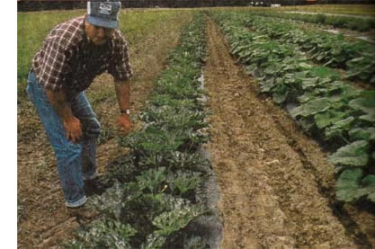 Quail Hill Community Farm members at the stand. |
|
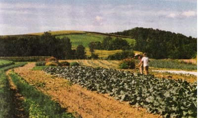 A sign at Quail Hill instructs CSA shareholders of the finer points of picking basil. |
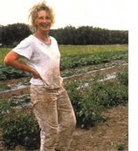 Several Slack Hollow interns and members haul in an impressive collection of squash (right) and carrot(left). |
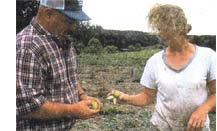 Quail Hill apprentices Paul Hamilton and Martha Bryant building a pea trellis. |
|
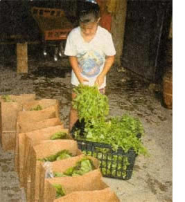 Harvesting Fall carrots at a CSA farm |
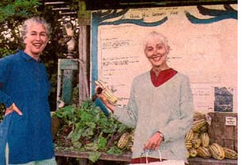 A gorgeous sunset at the Food Bank farm. |
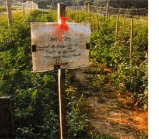 |
|
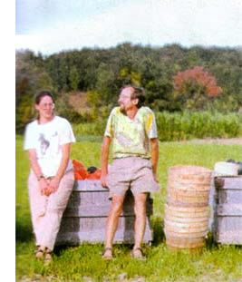 |
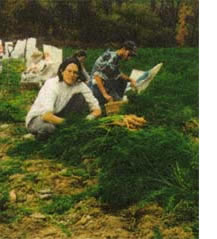 |
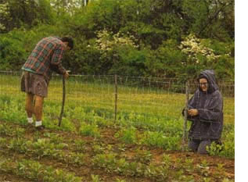 |
|
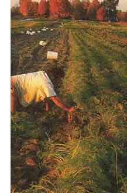 |
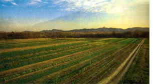 |
|